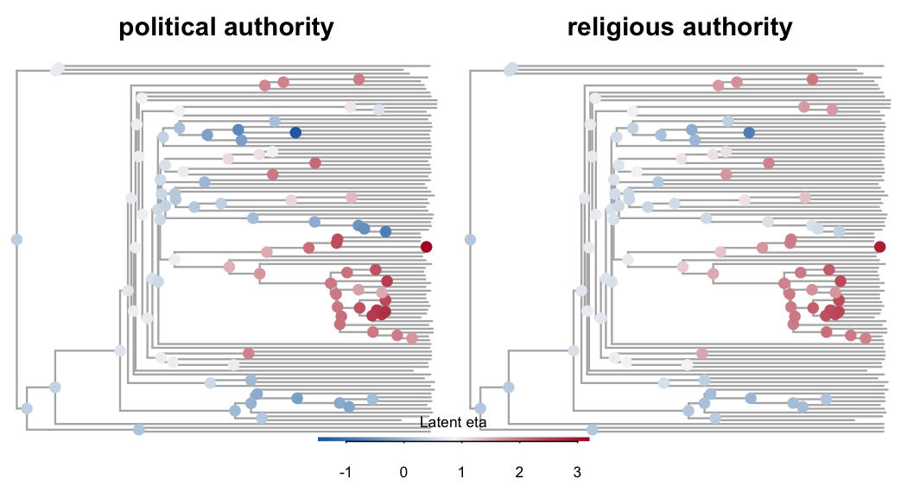
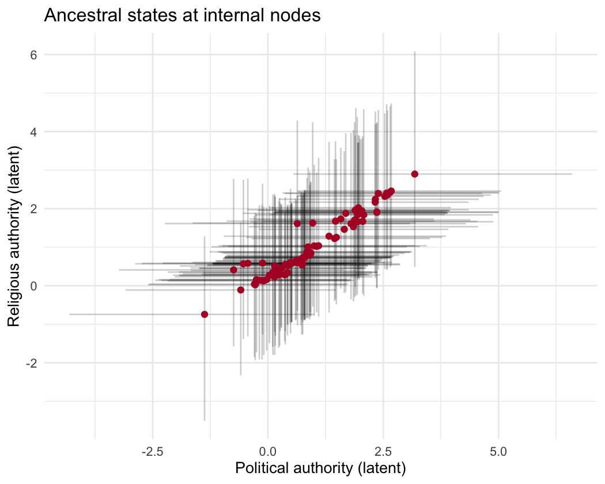
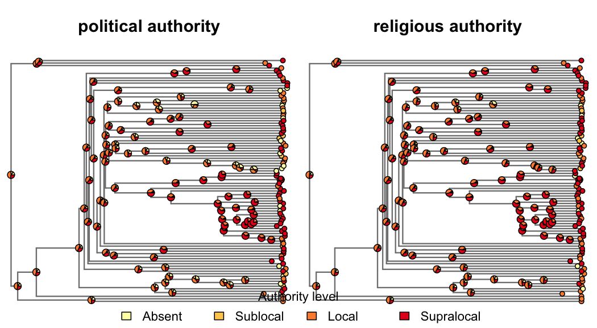
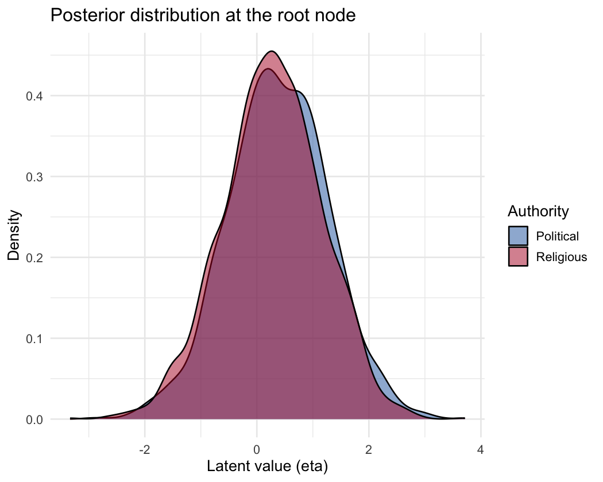
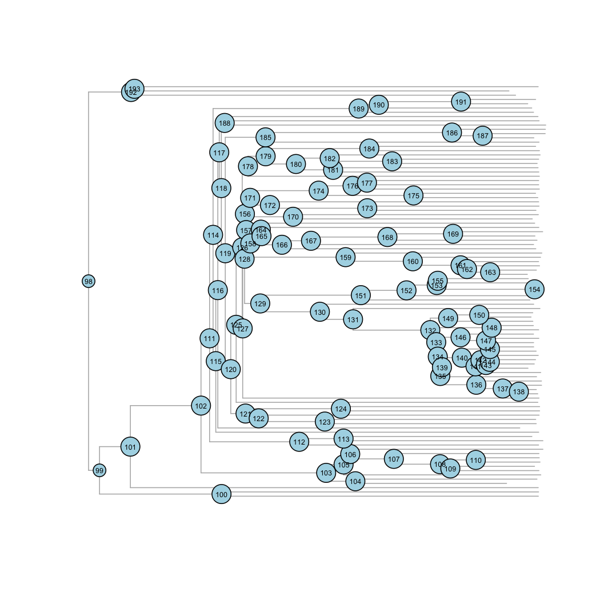

vignettes/ancestral_states.Rmd
ancestral_states.RmdThe coev_ancestral_states() function extracts posterior
estimates of latent trait values at internal (ancestral) nodes of the
phylogeny from a fitted coevfit model. Because the model
estimates latent states at every node in the tree, ancestral state
reconstruction is a natural byproduct of model fitting – no separate
analysis is needed.
This vignette demonstrates the function using the authority dataset bundled with the package: political and religious authority among 97 Austronesian societies.
We fit a coevolutionary model with two ordered-logistic variables. For demonstration purposes we use moderate sampling settings; in practice you would want more iterations and to check convergence carefully.
fit <- coev_fit(
data = authority$data,
variables = list(
political_authority = "ordered_logistic",
religious_authority = "ordered_logistic"
),
id = "language",
tree = authority$phylogeny,
parallel_chains = 4,
chains = 4,
iter_sampling = 500,
iter_warmup = 500,
seed = 42
)Running MCMC with 4 parallel chains...
Chain 1 Iteration: 1 / 1000 [ 0%] (Warmup)
Chain 2 Iteration: 1 / 1000 [ 0%] (Warmup)
Chain 3 Iteration: 1 / 1000 [ 0%] (Warmup)
Chain 4 Iteration: 1 / 1000 [ 0%] (Warmup)
Chain 2 Iteration: 100 / 1000 [ 10%] (Warmup)
Chain 3 Iteration: 100 / 1000 [ 10%] (Warmup)
Chain 4 Iteration: 100 / 1000 [ 10%] (Warmup)
Chain 1 Iteration: 100 / 1000 [ 10%] (Warmup)
Chain 3 Iteration: 200 / 1000 [ 20%] (Warmup)
Chain 2 Iteration: 200 / 1000 [ 20%] (Warmup)
Chain 1 Iteration: 200 / 1000 [ 20%] (Warmup)
Chain 4 Iteration: 200 / 1000 [ 20%] (Warmup)
Chain 3 Iteration: 300 / 1000 [ 30%] (Warmup)
Chain 4 Iteration: 300 / 1000 [ 30%] (Warmup)
Chain 2 Iteration: 300 / 1000 [ 30%] (Warmup)
Chain 1 Iteration: 300 / 1000 [ 30%] (Warmup)
Chain 3 Iteration: 400 / 1000 [ 40%] (Warmup)
Chain 4 Iteration: 400 / 1000 [ 40%] (Warmup)
Chain 2 Iteration: 400 / 1000 [ 40%] (Warmup)
Chain 1 Iteration: 400 / 1000 [ 40%] (Warmup)
Chain 3 Iteration: 500 / 1000 [ 50%] (Warmup)
Chain 3 Iteration: 501 / 1000 [ 50%] (Sampling)
Chain 4 Iteration: 500 / 1000 [ 50%] (Warmup)
Chain 4 Iteration: 501 / 1000 [ 50%] (Sampling)
Chain 2 Iteration: 500 / 1000 [ 50%] (Warmup)
Chain 2 Iteration: 501 / 1000 [ 50%] (Sampling)
Chain 4 Iteration: 600 / 1000 [ 60%] (Sampling)
Chain 1 Iteration: 500 / 1000 [ 50%] (Warmup)
Chain 1 Iteration: 501 / 1000 [ 50%] (Sampling)
Chain 3 Iteration: 600 / 1000 [ 60%] (Sampling)
Chain 4 Iteration: 700 / 1000 [ 70%] (Sampling)
Chain 2 Iteration: 600 / 1000 [ 60%] (Sampling)
Chain 4 Iteration: 800 / 1000 [ 80%] (Sampling)
Chain 1 Iteration: 600 / 1000 [ 60%] (Sampling)
Chain 3 Iteration: 700 / 1000 [ 70%] (Sampling)
Chain 4 Iteration: 900 / 1000 [ 90%] (Sampling)
Chain 2 Iteration: 700 / 1000 [ 70%] (Sampling)
Chain 4 Iteration: 1000 / 1000 [100%] (Sampling)
Chain 4 finished in 80.5 seconds.
Chain 1 Iteration: 700 / 1000 [ 70%] (Sampling)
Chain 3 Iteration: 800 / 1000 [ 80%] (Sampling)
Chain 2 Iteration: 800 / 1000 [ 80%] (Sampling)
Chain 1 Iteration: 800 / 1000 [ 80%] (Sampling)
Chain 3 Iteration: 900 / 1000 [ 90%] (Sampling)
Chain 2 Iteration: 900 / 1000 [ 90%] (Sampling)
Chain 1 Iteration: 900 / 1000 [ 90%] (Sampling)
Chain 3 Iteration: 1000 / 1000 [100%] (Sampling)
Chain 3 finished in 104.4 seconds.
Chain 2 Iteration: 1000 / 1000 [100%] (Sampling)
Chain 2 finished in 108.4 seconds.
Chain 1 Iteration: 1000 / 1000 [100%] (Sampling)
Chain 1 finished in 110.1 seconds.
All 4 chains finished successfully.
Mean chain execution time: 100.8 seconds.
Total execution time: 110.2 seconds.Quick check that the model sampled adequately:
summary(fit)Variables: political_authority = ordered_logistic
religious_authority = ordered_logistic
Data: authority$data (Number of observations: 97)
Phylogeny: authority$phylogeny (Number of trees: 1)
Draws: 4 chains, each with iter = 500; warmup = 500; thin = 1
total post-warmup draws = 2000
Autoregressive selection effects:
Estimate Est.Error 2.5% 97.5% Rhat Bulk_ESS Tail_ESS
political_authority -0.53 0.44 -1.64 -0.02 1.00 1420 1270
religious_authority -0.60 0.48 -1.82 -0.03 1.00 1549 1137
Cross selection effects:
Estimate Est.Error 2.5% 97.5% Rhat Bulk_ESS Tail_ESS
political_authority ⟶ religious_authority 1.50 0.74 -0.04 2.87 1.00 842 1055
religious_authority ⟶ political_authority 1.05 0.83 -0.62 2.64 1.00 701 1384
Drift parameters:
Estimate Est.Error 2.5% 97.5% Rhat Bulk_ESS Tail_ESS
sd(political_authority) 2.15 0.82 0.37 3.70 1.00 453 406
sd(religious_authority) 1.46 0.82 0.13 3.10 1.01 416 887
cor(political_authority,religious_authority) 0.37 0.30 -0.35 0.85 1.00 1116 1360
Continuous time intercept parameters:
Estimate Est.Error 2.5% 97.5% Rhat Bulk_ESS Tail_ESS
political_authority 0.31 0.91 -1.55 2.12 1.00 2426 1337
religious_authority 0.31 0.91 -1.47 2.14 1.01 3135 1612
Ordinal cutpoint parameters:
Estimate Est.Error 2.5% 97.5% Rhat Bulk_ESS Tail_ESS
political_authority[1] -1.44 0.88 -3.13 0.23 1.00 1266 1010
political_authority[2] -0.70 0.86 -2.36 1.01 1.00 1418 1276
political_authority[3] 1.48 0.86 -0.20 3.19 1.00 1661 1415
religious_authority[1] -1.59 0.92 -3.32 0.24 1.00 1424 1248
religious_authority[2] -0.92 0.90 -2.61 0.87 1.00 1699 1531
religious_authority[3] 1.45 0.92 -0.24 3.28 1.00 1913 1488Warning: There were 2 divergent transitions after warmup.
http://mc-stan.org/misc/warnings.html#divergent-transitions-after-warmupThe default call returns posterior summaries (median + 95% credible interval) for all internal nodes on the latent (eta) scale:
asr_latent <- coev_ancestral_states(fit)
head(asr_latent)# A tibble: 6 × 5
node variable estimate lower upper
<int> <chr> <dbl> <dbl> <dbl>
1 98 political_authority 0.377 -1.44 2.15
2 98 religious_authority 0.292 -1.52 1.92
3 99 political_authority 0.363 -1.39 2.20
4 99 religious_authority 0.282 -1.44 1.87
5 100 political_authority 0.235 -1.94 2.44
6 100 religious_authority 0.276 -1.61 2.20The result is a long-format tibble with one row per node-variable
combination. On the response scale (below), ordinal variables expand to
one row per node-variable-category and a category column
identifies the level; this column only appears for response-scale
output. The node column uses ape’s numbering convention
(tips are 1:N_tips, internal nodes are
(N_tips+1):(2*N_tips-1)), so it integrates directly with
phylo objects.
We can paint the tree with estimated ancestral values by mapping the posterior median to a diverging color gradient. Blue indicates low latent values; red indicates high:
tree <- attr(asr_latent, "ref_tree")
n_tips <- length(tree$tip.label)
asr_all <- coev_ancestral_states(fit, nodes = "all")
pal <- colorRampPalette(c("#2166AC", "#F7F7F7", "#B2182B"))(100)
rng <- range(asr_all$estimate)
# helper: map values onto the palette
to_color <- function(x) {
pal[pmax(1, pmin(100, findInterval(x, seq(rng[1], rng[2], length.out = 101))))]
}
par(mfrow = c(1, 2), mar = c(2, 0, 2, 0))
for (var in unique(asr_all$variable)) {
vals <- setNames(asr_all$estimate[asr_all$variable == var],
asr_all$node[asr_all$variable == var])
plot(tree, show.tip.label = FALSE, edge.width = 1.5,
edge.color = "grey70", main = gsub("_", " ", var))
internal_ids <- (n_tips + 1):(n_tips + tree$Nnode)
nodelabels(pch = 21, bg = to_color(vals[as.character(internal_ids)]),
col = NA, cex = 1.2)
}
# shared color bar
par(fig = c(0.35, 0.65, 0.02, 0.18), new = TRUE, mar = c(1.8, 0, 1.1, 0))
image(seq(rng[1], rng[2], length.out = 100), 1,
matrix(1:100), col = pal, axes = FALSE, xlab = "", ylab = "")
axis(1, cex.axis = 0.7, padj = -1, tck = -0.25)
mtext("Latent eta", side = 3, line = 0.2, cex = 0.7)
plot of chunk asr-latent-tree
We can also look at the joint distribution of ancestral states across the two variables. Each point is an internal node, with crosshairs showing the 95% credible interval:
asr_wide <- asr_latent |>
select(node, variable, estimate, lower, upper) |>
pivot_wider(
names_from = variable,
values_from = c(estimate, lower, upper)
)
ggplot(asr_wide,
aes(x = estimate_political_authority,
y = estimate_religious_authority)) +
geom_errorbar(
aes(ymin = lower_religious_authority,
ymax = upper_religious_authority),
alpha = 0.2, width = 0
) +
geom_errorbarh(
aes(xmin = lower_political_authority,
xmax = upper_political_authority),
alpha = 0.2, height = 0
) +
geom_point(color = "#B2182B", size = 2) +
labs(
x = "Political authority (latent)",
y = "Religious authority (latent)",
title = "Ancestral states at internal nodes"
)Warning: `geom_errorbarh()` was deprecated in ggplot2 4.0.0.
ℹ Please use the `orientation` argument of `geom_errorbar()` instead.
This warning is displayed once every 8 hours.
Call `lifecycle::last_lifecycle_warnings()` to see where this warning was generated.`height` was translated to `width`.
plot of chunk asr-latent-scatter
For ordered-logistic variables, the response scale returns estimated
category probabilities at each node – how likely each level of authority
(absent, sublocal, local, supralocal) was at that ancestral node. Each
ordinal variable expands to one row per category, with
category populated:
asr_resp <- coev_ancestral_states(
fit, nodes = "all", scale = "response"
)
head(asr_resp, 8)# A tibble: 8 × 6
node variable category estimate lower upper
<int> <chr> <chr> <dbl> <dbl> <dbl>
1 1 political_authority cat_1 0.0442 0.00234 0.303
2 1 political_authority cat_2 0.0419 0.00264 0.193
3 1 political_authority cat_3 0.346 0.0455 0.587
4 1 political_authority cat_4 0.536 0.102 0.947
5 1 religious_authority cat_1 0.0348 0.00157 0.285
6 1 religious_authority cat_2 0.0284 0.00133 0.149
7 1 religious_authority cat_3 0.340 0.0352 0.607
8 1 religious_authority cat_4 0.581 0.106 0.960The point estimate (estimate) is the posterior median
for all rows, consistent with the latent scale. Because medians do not
distribute over sums, the per-node category estimates need not sum
exactly to 1. The lower and upper columns are
per-category posterior quantiles.
This is the most intuitive way to visualize ordinal ancestral states. Each pie chart at an internal node shows the posterior probability of each category (posterior medians, normalized to sum to 1). At the tips, observed values are shown as solid colors (one category with probability 1). If a tip has missing data, the model-estimated probabilities are shown instead.
cat_labels <- c("Absent", "Sublocal", "Local", "Supralocal")
cat_colors <- c("#FFFFB2", "#FECC5C", "#FD8D3C", "#E31A1C")
n_cats <- length(cat_labels)
# pivot ordinal-response long format -> per-node probability matrix
to_pie_mat <- function(df) {
wide <- df |>
select(node, category, estimate) |>
pivot_wider(names_from = category, values_from = estimate) |>
arrange(node)
mat <- as.matrix(wide[, paste0("cat_", seq_len(n_cats))])
mat / rowSums(mat)
}
par(mfrow = c(1, 2), mar = c(1, 0, 3, 0))
for (var in unique(asr_resp$variable)) {
df_var <- asr_resp |> filter(variable == var)
plot(tree, show.tip.label = FALSE, edge.width = 1.5,
edge.color = "grey50", main = gsub("_", " ", var))
# internal nodes: model-estimated category probabilities
nodelabels(pie = to_pie_mat(filter(df_var, node > n_tips)),
piecol = cat_colors, cex = 0.6)
# tips: observed value (deterministic) when present, otherwise model estimate
tip_pie <- to_pie_mat(filter(df_var, node <= n_tips))
obs <- authority$data[[var]][match(tree$tip.label, authority$data$language)]
observed <- !is.na(obs)
tip_pie[observed, ] <- 0
tip_pie[cbind(which(observed), as.integer(obs[observed]))] <- 1
tiplabels(pie = tip_pie, piecol = cat_colors, cex = 0.4)
}
# shared legend
par(fig = c(0.2, 0.8, 0, 0.12), new = TRUE, mar = rep(0, 4))
plot.new()
legend("center", legend = cat_labels, fill = cat_colors, xpd = NA,
horiz = TRUE, bty = "n", cex = 0.9, title = "Authority level")
plot of chunk asr-pie-tree
Setting summary = FALSE returns the full posterior
array, which is useful for custom summaries or propagating
uncertainty:
asr_draws <- coev_ancestral_states(fit, summary = FALSE)
str(asr_draws, max.level = 1)List of 4
$ draws : num [1:2000, 1:96, 1:2] 0.914 0.294 1.224 0.221 0.319 ...
..- attr(*, "dimnames")=List of 3
$ ref_tree :List of 5
..- attr(*, "class")= chr "phylo"
..- attr(*, "order")= chr "cladewise"
..- attr(*, "clade.credibility")= num -24.9
$ node_ids : int [1:96] 98 99 100 101 102 103 104 105 106 107 ...
$ variable_names: chr [1:2] "political_authority" "religious_authority"The draws element is a 3D array with dimensions
[draws, nodes, variables]. Here’s an example: the posterior
density of latent values at the root node for both variables:
root_node_idx <- which(asr_draws$node_ids == n_tips + 1)
root_df <- data.frame(
political_authority = asr_draws$draws[, root_node_idx, 1],
religious_authority = asr_draws$draws[, root_node_idx, 2]
) |>
pivot_longer(everything(), names_to = "variable", values_to = "eta")
ggplot(root_df, aes(x = eta, fill = variable)) +
geom_density(alpha = 0.5) +
scale_fill_manual(
values = c(political_authority = "#2166AC",
religious_authority = "#B2182B"),
labels = c("Political", "Religious"),
name = "Authority"
) +
labs(
x = "Latent value (eta)",
y = "Density",
title = "Posterior distribution at the root node"
)
plot of chunk asr-root-density
To query ancestral states for specific nodes, you first need to know
their IDs. Node numbering follows ape’s convention: tips are
1:N_tips and internal nodes are
(N_tips + 1):(2 * N_tips - 1). The ape package provides
everything needed to display and select nodes – for example, plotting
the tree with internal node IDs labelled:
plot(tree, show.tip.label = FALSE, edge.color = "grey70")
nodelabels(cex = 0.5, frame = "circle", bg = "lightblue")
plot of chunk asr-node-labels
In an interactive R session you can instead click directly on the
plotted tree to select nodes with
ape::identify.phylo():
plot(tree, show.tip.label = FALSE)
node <- identify(tree)$nodes
coev_ancestral_states(fit, nodes = node)Once you know the node IDs, you can target specific nodes or variables to reduce computation and focus the output:
# only religious authority, at three specific internal nodes
asr_sub <- coev_ancestral_states(
fit,
variables = "religious_authority",
nodes = c(n_tips + 1, n_tips + 2, n_tips + 3)
)
asr_sub# A tibble: 3 × 5
node variable estimate lower upper
<int> <chr> <dbl> <dbl> <dbl>
1 98 religious_authority 0.292 -1.52 1.92
2 99 religious_authority 0.282 -1.44 1.87
3 100 religious_authority 0.276 -1.61 2.20